近期做的一个项目，由于需要频繁的上传大文件资源，导致存储空间的需求直线上升，在解决这个问题的过程中，偶然发现了百度网盘有一个开放平台，只需要简单的几步操作，就可以实现本地资源实时上传到百度网盘。
当然了，最终我们的项目是没有采用这种方案，因为还是有一些暂时没有解决的问题，就暂时存到了我们自己的附件服务器。
而由于之前写好的一些东西已经实现了同步到百度网盘的功能，同时呢因为好好阅读了百度云盘的接口文档，又联想到前阵子出事儿的“pandownload”事件，这些事情综合起来，我觉得非常巧，也非常有意思，就想拿出来说说。
百度网盘开放平台的地址：https://pan.baidu.com/union#/
根据平台的介绍，百度网盘开放了很多能力，包括图片处理，音视频，上传文件，下载文件，附件能力，nas能力，文件提取，设备管理等等。
我们在解决文件存储问题的过程，主要是用到了上传文件和音视频的接口。
来看下整个的接入流程
首先，百度网盘开放平台，并不是像百度云或者其他云服务一样，针对所有用户都开放的，需要提交使用申请，通过之后方可接入相关能力。
申请地址如下:https://pan.baidu.com/union/apply，这个没什么好说的，技术是人家的，想拿来用就得按人家的规则来。一般提交了申请，1，2天结果就下来了。
申请下来之后，到开放平台的控制台http://developer.baidu.com/console#app/project创建一个工程（和百度云控制台的工程是互通的）
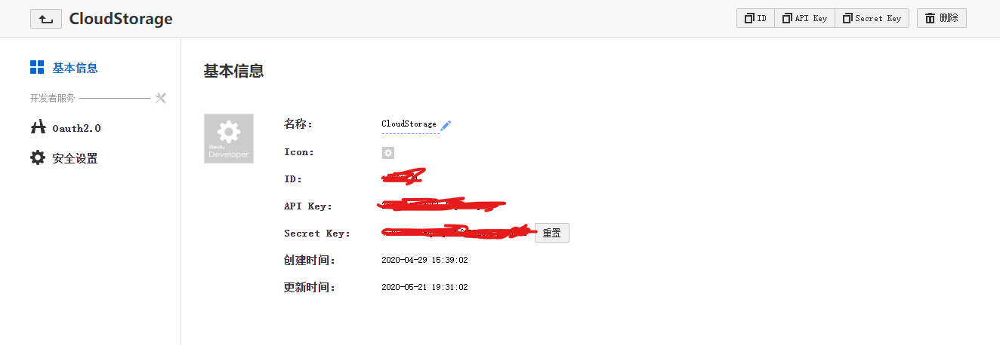
创建完成后，会得到一个应用的相关信息，同时根据平台的建议，需要设定一个可以访问到的回调页
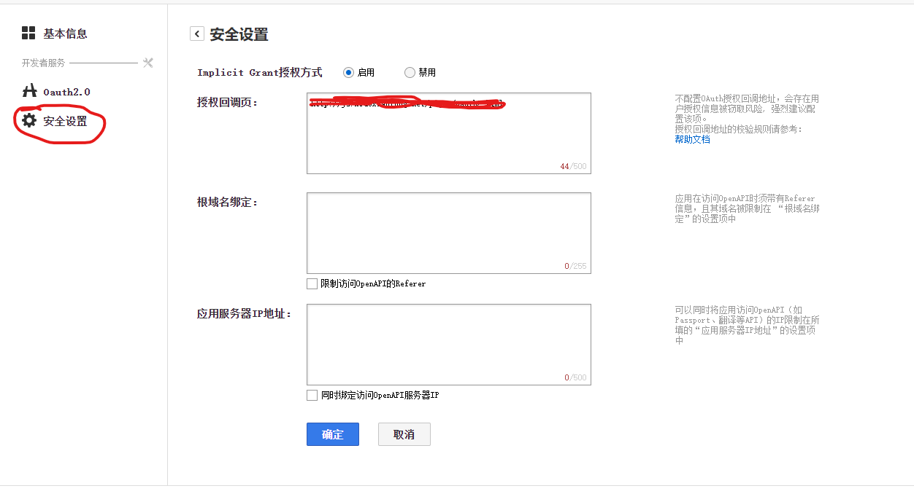
当然不设定也是可以的，下面我会提到，但如果是生产环境使用的话，最好是设定这样一个回调页。
这一部分平台的相关帮助内容在这个页面http://developer.baidu.com/wiki/index.php?title=docs/oauth/redirect
设定完成后，我们可以访问一个特定的链接，用到工程项目中的apikey和secretkey以及回调链接当作参数，具体如下
http://openapi.baidu.com/oauth/2.0/authorize?
response_type=code&
client_id=YOUR_CLIENT_ID&
redirect_uri=YOUR_REGISTERED_REDIRECT_URI&
scope=email&
display=popup
这一步完成后，会跳转到我们设定的那个回调页，同时会多一个code参数，拿到这个code就可以取换取token了（一个标准的Oauth2.0操作）
前面提到，如果不设定回调页也是可以的，在对应的url参数上填写“obb”固定值，访问拼接好的连接后，会跳转到一个百度提供的回调页，也可以得到code，但这不是建议的方式。
这一步，主要涉及到跳转，传参，取值等操作，取到code之后，基本这一步以后就不会再用到了，因为换取到access_token的同时，还会得到一个refresh_token，其中access_token的有效期是一个月，而refresh_token的有效期确实10年！也就是说，成功拿到access_token之后，有10年的使用期~~
至此，前戏结束，拿到令牌以后，后续就容易多了。
接下来，要把大象装冰箱，总共分三步。我们要把我们的大文件传到百度云盘，也分三步，接口文档为https://pan.baidu.com/union/document/upload。
文档写的听明白了，但我觉得如果你之前很少用过云服务，看起文档来十有八九都是越看越懵逼的，所以我这就提供个例子。
1.预上传
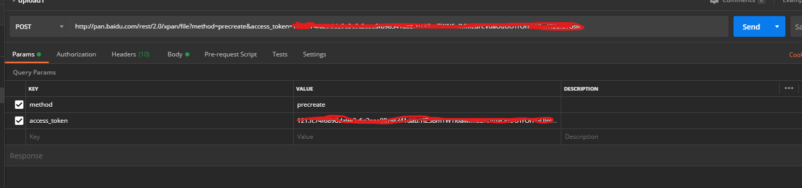
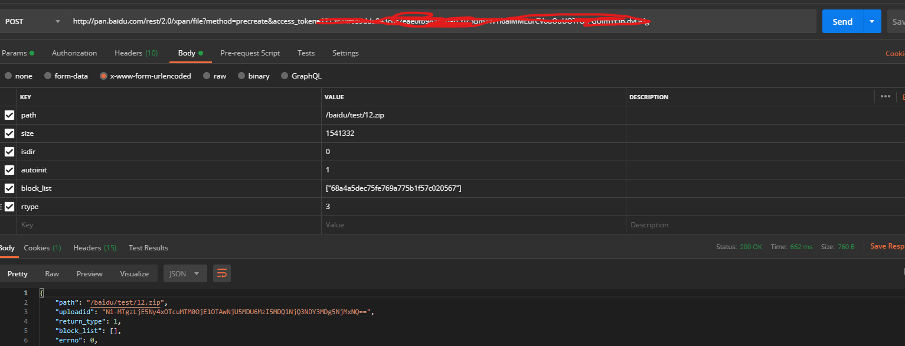
这里我就想说一下那个block_list这个参数，这个值是文件的md5值，在第一步预上传的时候，可以通过程序来获取该值。
实现的接口代码就非常简单了，也简单贴一下
1 | /// <summary> |
第一步里的返回参数里，最重要的就是uploadid了，这是第二步里要用到的一个参数。
2.分片上传
第二步需要注意的就是，除了文件需要放到请求body里，其他参数都需要放到url里，看下postman的实例
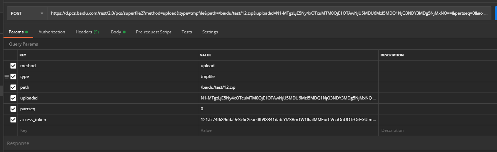
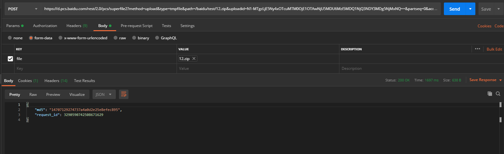
对应的接口代码
1 | /// <summary> |
3.创建文件
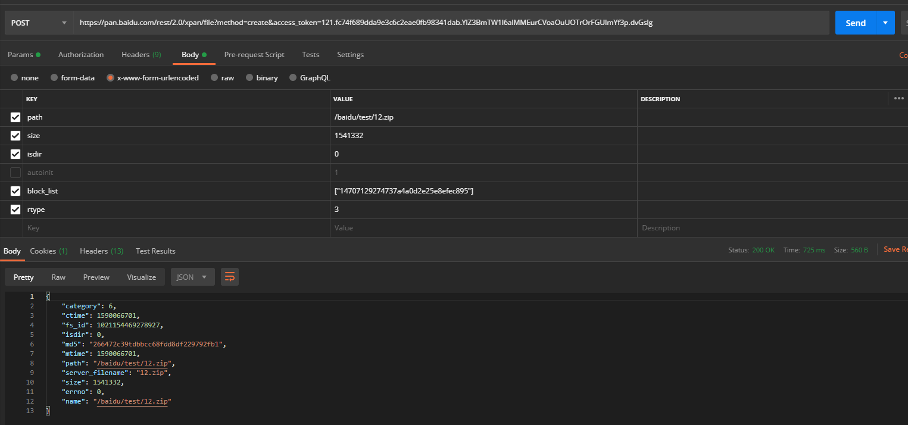
对应的接口代码
1 | public class BdNasCreate |
三步操作完成后，打开百度网盘，我们就看到我们刚上传的文件啦
这里我分享的是上传文件每个步骤拆开后的单独操作和对应开发的接口，实际应用的时候，我们可能需要把三步操作合并成一步，其中可能会涉及到一些网络延时等问题，需要按实际的业务需求酌情处理。m
一般此类操作都是在后台或者单独的服务中另起线程来运行。
至此，上传的整个流程就完成了，剩下的就是怎么更好的融入到业务系统了。
再简单介绍下获取视频流的接口
其实百度虽然开放了视频能力，而接口文档写的实在有限。但是话又说回来了，人家都把能力放开给你用了，而且这个能力比多大多数个人和团队自己处理的要好的多得多得多，还要什么自行车！
我个人觉得，要彻底理解平台开放视频能力，需要有一些预备知识，比如hls协议，hls和rtmp协议的区别，m3u8是什么类型的文件，文件中的各个字段都代表什么意思等等。
这个我就不多说了，我是觉得视频处理这块，每个环节单独拎出来都是很大的一块，我也在学习中，就直接看一个例子吧
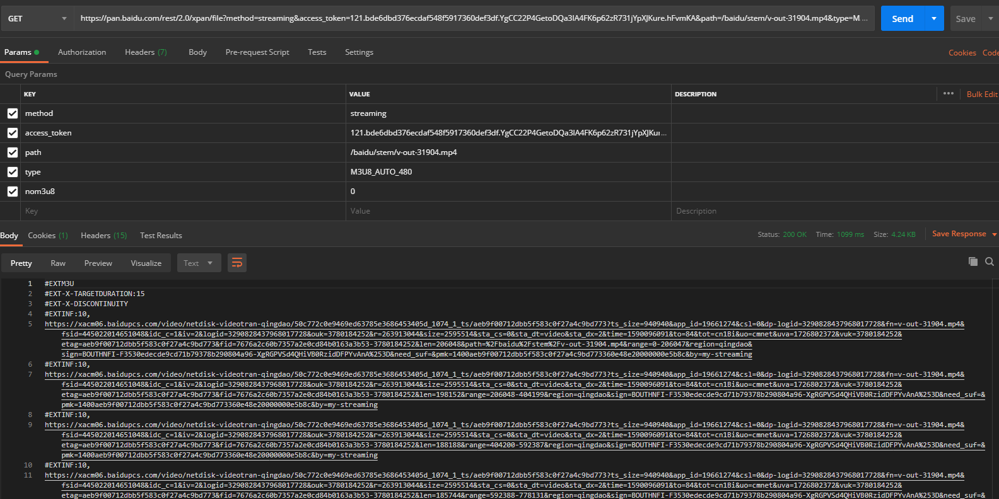
这个其实在接口里看是没有实际意义的，但这样可以直接看到百度返回来的m3u8格式的文件内容，帮助我们分析，实际使用的时候，该接口需要直接反馈到终端播放器即可完成视频输出。
比如我这里用VLC播放器来演示一下
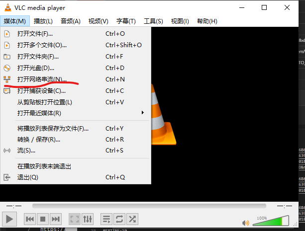
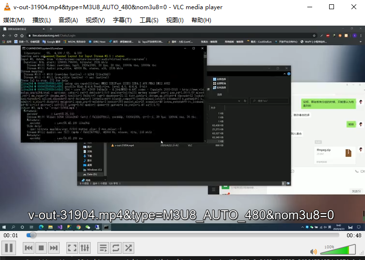
至此，就完成了视频播放的集成，这里我想说的是，我们在项目中集成该功能时，因为是web系统，在浏览器中会出现跨域的错误，暂时没办法解决，而如果你的终端时app或者桌面程序，那就没有这个问题了。最后，我想再回到文章开头提到的“pandownload”的事件，其实吧，一开始听到这个新闻，我还觉得这个作者挺牛逼的，还查了一下，说这个软件的工作原理，用到什么aria2等工具来加速下载。
但是如果你读过开放平台上的文档，就会发现，这个软件在怎么牛逼，但凡事要下载，你得解析出实际的下载地址来吧，而这个实际的下载地址，开放平台提供的接口里是可以获取到的，叫做dlink.
如下图
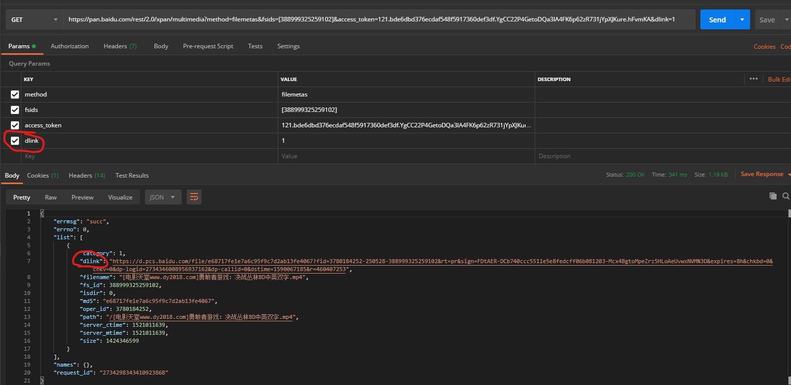
我们可以很容易获取到该值，而拿到该文件地址之后，就可以尽情下载了，所以反向来推理下“pandownload”的原理，或者我们来根据平台提供的能力来模拟一个类似的逻辑。
1.获得平台能力->2.获取文件->3.将文件转存到个人云盘->4.获取下载链接，其中第三步我自己没试过，其他几步都没问题，所以呢，pandownload如果是按照这个思路来实现的话，那我觉得这个作者可能是把自己当成燕子李三了，以为网盘的用户都是贫困户，自己知道了怎么薅百度的羊毛，还免费让别人也来他这薅，这就是有点内味了吧。
最后，再总结下，我个人觉得百度其实挺厚道的，虽然最后没有继承它的视频能力，但上传，下载等功能还是非常实用的，而且账号如果开通了vip，接口使用起来也会更顺畅，用非常低的成本，获得了原本需要几倍成本才有的存储能力，还是非常厚道的。不过还是要提醒下，百度的文档里说的也很清楚，如果要继承其接口能力，在产品发布的时候，最好是给人家发个邮件告知一下，别薅high了，薅过头了，回头人家反手就把你告上公堂，你也无话可说啊，“pandownload”的事件就是个典型的例子。
好了，接下来几篇，还是聊项目中用到的东西，对效率提升较明显的东西，比如语法上的泛型委托，工具上的消息队列中间件等等。
距离上篇博客隔了一个多月了，其实早想写了，但真心是没时间~